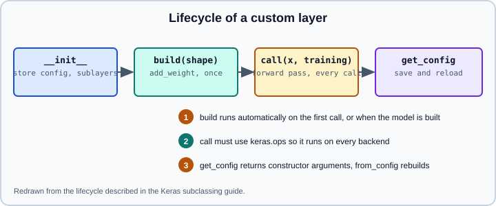

Subclassing & Custom Layers
|
This content was generated with the assistance of AI and should be verified against the official documentation before being relied on in production. |
When a built-in layer does not do what you need, you subclass keras.layers.Layer; when a whole network needs Python control flow or custom train and evaluation behaviour, you subclass keras.Model. This page covers the layer lifecycle, weights, the training and mask arguments, regularization losses, serialization, backend-agnostic code and testing. The declarative alternatives are on Sequential & Functional Models, the built-in layers on Core Keras Layers, and overriding the training step on Customizing fit() with train_step. Saving models that contain custom layers continues on Saving Keras Models.
It targets Python 3.13 and TensorFlow 2.21 with Keras 3.15 (TensorFlow 2.22 is upcoming), and was checked against the official keras.io guide and API pages on 2026-10-30. Examples were run on Python 3.13 with TensorFlow 2.21 and Keras 3.15 (CPU) on 2026-10-31. The PyTorch counterpart is nn.Module, and the older TensorFlow Core way to hold variables is tf.Module.
The layer lifecycle
A layer packages state (weights) and a computation (call). Keras 3 splits its life into four steps.

-
__init__stores configuration such asunitsand creates sublayers. It must not depend on the input shape. -
build(input_shape)creates weights once the input shape is known. Keras calls it automatically on the first call (or when a Functional graph is traced), so a layer does not need to know its input size in advance. -
call(inputs, ...)is the forward pass, executed on every call. -
get_config()returns the constructor arguments so the layer can be saved and reloaded.
A first custom layer
import keras
from keras import ops
class Linear(keras.layers.Layer):
def __init__(self, units=32, **kwargs):
super().__init__(**kwargs)
self.units = units
def build(self, input_shape):
self.w = self.add_weight(
shape=(input_shape[-1], self.units),
initializer="glorot_uniform",
trainable=True,
name="kernel",
)
self.b = self.add_weight(
shape=(self.units,),
initializer="zeros",
trainable=True,
name="bias",
)
def call(self, inputs):
return ops.matmul(inputs, self.w) + self.b
layer = Linear(4)
y = layer(ops.ones((2, 3))) # build runs here
print(y.shape, len(layer.weights)) # (2, 4) 2Notes that save debugging time:
-
Always accept
**kwargsin__init__and pass them tosuper().__init__, soname,dtypeandtrainablework. -
Weights created with
add_weightare tracked automatically. Assigning aLayerto an attribute also tracks its weights recursively, so a layer can contain other layers. -
Keras 3 passes weights as
keras.Variableobjects, a backend-neutral wrapper. Read a value withvariable.valueorops.convert_to_numpy(variable); assign withvariable.assign(...). -
A layer built without
buildcan still create weights in__init__if it already knows every shape, which is simplest for fixed-size layers. -
Calling
layer(x)is different from callinglayer.call(x): only__call__builds the layer, handles masks and thetrainingargument, and records the symbolic graph.
Weights, variables and non-trainable state
add_weight accepts shape, initializer, regularizer, constraint, trainable, dtype and name. Non-trainable weights are still saved but excluded from trainable_weights.
class RunningMean(keras.layers.Layer):
def build(self, input_shape):
self.total = self.add_weight(shape=(), initializer="zeros", trainable=False)
self.count = self.add_weight(shape=(), initializer="zeros", trainable=False)
def call(self, inputs):
self.total.assign(self.total + ops.sum(inputs))
self.count.assign(self.count + ops.cast(ops.size(inputs), "float32"))
return inputs - self.total / self.count
layer = RunningMean()
_ = layer(ops.ones((4,)))
print(len(layer.trainable_weights), len(layer.non_trainable_weights)) # 0 2State that is updated inside call this way is a side effect. It works in eager mode and under the TensorFlow backend’s tf.function, but on the JAX backend training steps are pure functions, so state updates must go through Keras variables exactly as above; assigning to a Python attribute is silently lost. See Keras Multi-Backend.
The training and mask arguments
If call declares a training argument, Keras fills it in: True during fit, False during evaluate and predict, and whatever you pass explicitly otherwise. Layers such as Dropout and BatchNormalization rely on it. Likewise a mask argument receives the boolean mask produced by an upstream Embedding(mask_zero=True) or Masking layer.
class NoisyDense(keras.layers.Layer):
def __init__(self, units, noise=0.1, **kwargs):
super().__init__(**kwargs)
self.dense = keras.layers.Dense(units) # sublayer, tracked
self.noise = noise
self.supports_masking = True
def call(self, inputs, training=None, mask=None):
x = self.dense(inputs)
if training:
x = x + keras.random.normal(ops.shape(x), stddev=self.noise)
return xWhen you call a sublayer inside call, forward training explicitly if the sublayer behaves differently in training (self.bn(x, training=training)). Keras propagates it automatically for layers called through the standard __call__ path in many cases, but being explicit is harmless and avoids surprises. Set supports_masking = True if the layer leaves the time axis intact, so a mask flows through it; otherwise Keras raises an error when a masked tensor reaches the layer.
Losses inside a layer
self.add_loss(value) inside call adds a scalar to the model’s loss, which is how activity regularizers and auxiliary penalties are written. layer.losses is cleared at the start of each top-level call, so always compute the term inside call.
class ActivityPenalty(keras.layers.Layer):
def __init__(self, rate=1e-2, **kwargs):
super().__init__(**kwargs)
self.rate = rate
def call(self, inputs):
self.add_loss(self.rate * ops.mean(ops.abs(inputs)))
return inputs
penalty = ActivityPenalty()
_ = penalty(ops.ones((2, 3)))
print(penalty.losses) # one scalar tensorRegularizers passed to inner layers (for example kernel_regularizer=keras.regularizers.L2(1e-4)) are collected into layer.losses too, and fit adds the sum of all of them to the compiled loss. Weight decay implemented in the optimizer is the alternative; see Optimizers & Learning-Rate Schedules and Generalization & Regularization.
Serialization
To save a model that contains a custom layer you must be able to rebuild it from a dictionary. Implement get_config returning the constructor arguments, and register the class so the loader can find it by name.
@keras.saving.register_keras_serializable(package="my_project")
class ScaledDense(keras.layers.Layer):
def __init__(self, units, scale=1.0, **kwargs):
super().__init__(**kwargs)
self.units = units
self.scale = scale
self.dense = keras.layers.Dense(units)
def build(self, input_shape):
self.dense.build(input_shape) # build the sublayer so load_model can restore its weights
def call(self, inputs):
return self.scale * self.dense(inputs)
def get_config(self):
config = super().get_config()
config.update({"units": self.units, "scale": self.scale})
return config
model = keras.Sequential([keras.Input((4,)), ScaledDense(3, scale=2.0)])
model.save("scaled.keras")
restored = keras.models.load_model("scaled.keras")Source: https://keras.io/guides/making_new_layers_and_models_via_subclassing/ and https://keras.io/guides/serialization_and_saving/
-
The default
from_configiscls(**config), so every key in the config must be a constructor argument. Overridefrom_configonly when an argument needs custom deserialization (for example a nested layer or an initializer). -
Without registration, pass
custom_objects={"ScaledDense": ScaledDense}toload_model, or usekeras.saving.custom_object_scope. -
Sublayers created in
__init__are rebuilt by the constructor, so they do not need to appear in the config; only the arguments that create them do. -
If the layer creates weights in
build, Keras 3 restores them by callingbuildthroughbuild_from_config. A layer that only holds sublayers should still definebuildand build them, as above; without it, loading still restores the weights but warns thatbuild()was called on a layer that "does not have abuild()method implemented". Layers whose build depends on more than the input shape may need to overrideget_build_configandbuild_from_config. -
Serialize nested objects with
keras.saving.serialize_keras_objectandkeras.saving.deserialize_keras_object, for example for an activation or an initializer argument.
The .keras format and weights-only files are covered on Saving Keras Models.
Backend-agnostic code with keras.ops
Keras 3 can run on TensorFlow, JAX and PyTorch. A layer is portable only if call uses keras.ops, keras.random, keras.activations and other keras APIs rather than tf.matmul or torch.matmul.
| Instead of | Use |
|---|---|
|
|
|
|
|
|
|
|
|
|
If a layer deliberately uses TensorFlow-only features (for example tf.RaggedTensor), say so in its documentation and keep it out of models that must be portable. When you do not know the output shape, Keras infers it by running call on symbolic inputs (compute_output_spec); override compute_output_shape only when a layer cannot be traced symbolically or you want faster graph building.
Subclassing models
keras.Model adds compile, fit, evaluate, predict, save and summary on top of Layer. Use a Model subclass for a top-level network and for reusable blocks that you want to train on their own.
class Encoder(keras.layers.Layer):
def __init__(self, dim, **kwargs):
super().__init__(**kwargs)
self.proj = keras.layers.Dense(dim, activation="relu")
self.norm = keras.layers.LayerNormalization()
def call(self, x):
return self.norm(self.proj(x))
class Classifier(keras.Model):
def __init__(self, dim, classes, **kwargs):
super().__init__(**kwargs)
self.encoder = Encoder(dim)
self.dropout = keras.layers.Dropout(0.2)
self.head = keras.layers.Dense(classes)
def call(self, x, training=False):
h = self.encoder(x)
h = self.dropout(h, training=training)
return self.head(h)
model = Classifier(32, 5)
model(keras.ops.zeros((1, 10))) # one call on a dummy batch creates every weight
model.summary() # Total params: 581
model.compile(
optimizer="adam",
loss=keras.losses.SparseCategoricalCrossentropy(from_logits=True),
metrics=["accuracy"],
)A subclassed model has no inspectable graph: model.summary() shows parameter counts only after the model has been called on data (calling model.buildNone, 10 on a subclass without its own build() method only warns that the layer "has unbuilt state" and leaves the sublayers unbuilt, so the summary reports 0 parameters), plot_model is limited, and shape bugs appear at run time. A common compromise is a Functional model whose blocks are custom layers, which keeps the graph and the flexibility. For layer-level unit tests, call the layer on a small batch, assert the output shape and a hand-computed value, and run a save and reload round trip.
Common pitfalls
-
Creating weights in
call: it runs on every call, so each call would create fresh variables. Create them inbuildor__init__. -
Forgetting
super().__init__(**kwargs), which leavesname, tracking andtrainableunset. -
Storing sublayers in a plain Python list or dict that is created lazily; assign them in
__init__so Keras tracks them. Keras 3 tracks lists and dicts of layers assigned as attributes, but layers hidden in other objects are not found. -
Python side effects inside
call(counters, appending to lists): they run only while tracing a compiled function, not per step. -
Using
tfops in a layer that is later run on the JAX or PyTorch backend. -
Omitting
get_config, which makesload_modelfail with a message asking for the class to be registered or its config implemented. -
Reading the
trainingargument as alwaysTrueorFalse; it isNoneby default and falls back to the context set by Keras. -
Relying on Keras 2 behaviour such as
tf.keras.layers.Layer.add_weightpositional arguments ortf.Variableattributes; the Keras 3add_weightis keyword-based, as in the examples above. See Migrating from Keras 2 to Keras 3.
References
-
Making new layers and models via subclassing: https://keras.io/guides/making_new_layers_and_models_via_subclassing/
-
Layer API: https://keras.io/api/layers/base_layer/
-
Serialization and saving guide: https://keras.io/guides/serialization_and_saving/
-
Model API: https://keras.io/api/models/model/
-
keras.opsAPI: https://keras.io/api/ops/ -
Keras 3 announcement: https://keras.io/keras_3/